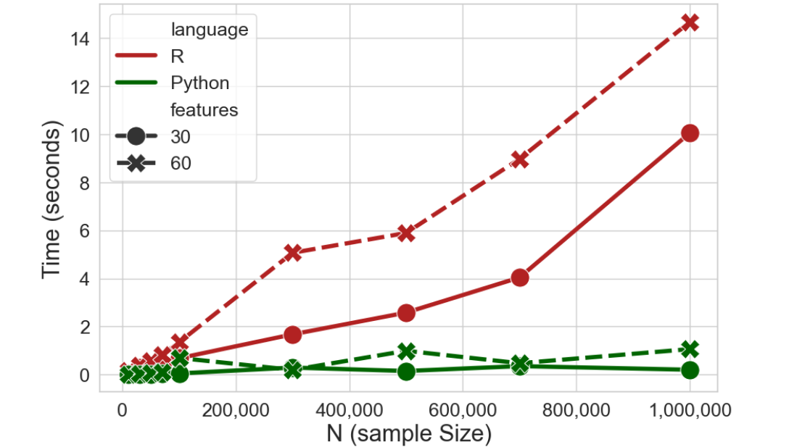
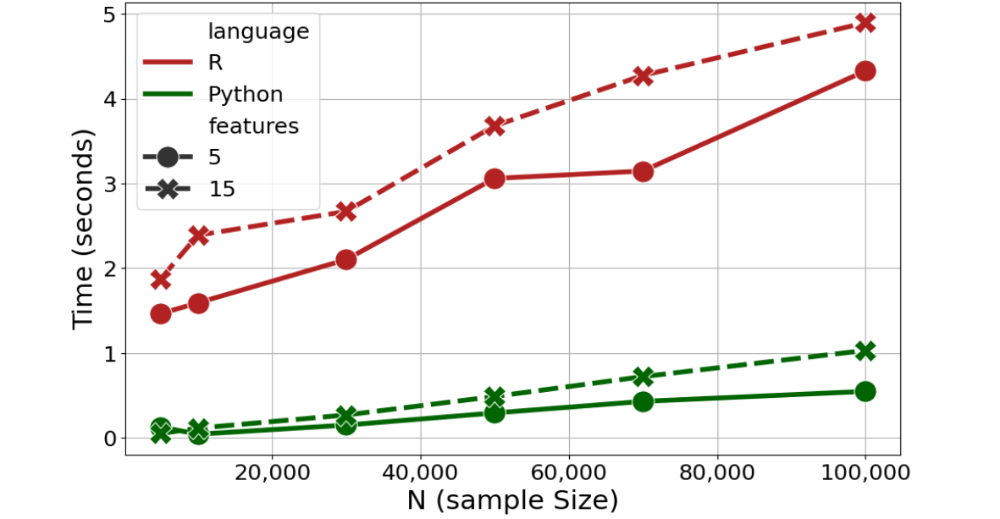
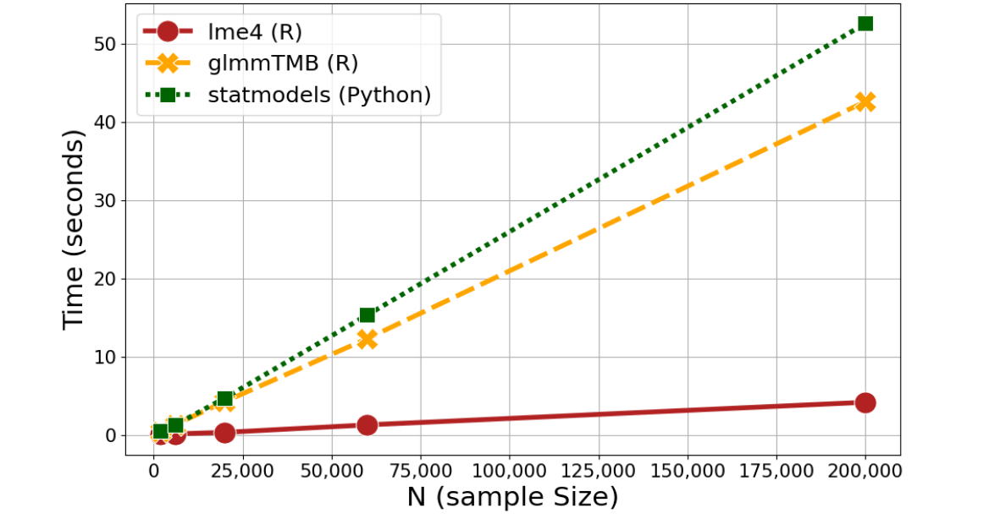

Intro to This Course, aka Why We Should Use Python
Enrico Toffalini
Why learning Python?
Ultra mainstream and global leader in programming (and data science!)Most used programming language in the world (June 2026); extremely used in industry, but also increasingly adopted in academia. Huge job market advantage as a data scientist, inside and even more outside academia!
Huge community & ecosystem: >800,000 packages on PyPI! (more than 30x compared to R);
Free & open-source, like R… Python will be with you wherever you go, for free!
Great for reproducibility: like R, it integrates well with GitHub, Quarto, Jupyter, RStudio, R itself, and more; allows you to create pipelines of analysis, reports, articles, books, web apps, experiments… A great tool for Open Science!
Strong programming language, considered easier to read than R, and very widely used beyond statistical analysis (e.g., developing web apps, machine learning, deep learning & AI, programming experiments)
What you may expect to learn in this course
Running fundamental operations and using core functions;
Working with basic data types and structures (list, dict, DataFrame);
Learning a bit of data manipulation for data science with Pandas and NumPy;
Learning fundamental programming tools: loops, conditionals, custom functions;
Brief overview of fancy stuff with machine learning, deep learning, natural language processing, experiment programming
Why should you use Python, later in your PhD?
I don’t recommend using Python for doing the exact same things you could do with R. R is much more used in this PhD program and generally for statistical analysis in academia.
So why learning Python? Apart from its importance for “outside academia”, you could learn Python for your PhD for:
Advanced applications of AI: pretrained models, Natural Language Processing (e.g., sentiment analysis, text classification, embeddings);
Computational efficiency especially when handling big data;
Behavioral experiment (e.g., PsychoPy, OpenSesame are becoming widely used in cognitive science).
Python vs R (for us): Different Strengths
Task
R
Python
Data management for data science
✅ base, dplyr, tidyverse; base R more specialized for statistics and data analysis
✅ pandas, numpy; very flexible; more scalable on big data
Visualization
✅ ggplot2 ♥️
✅ matplotlib, seaborn
Statistical modeling
✅ base, lme4, glmmTMB, mgcv, lavaan, … ♥️ 🏆
⚠️ many alternatives, but generally less flexible
Advanced machine learning
⚠️ caret, mlr3
✅ scikit-learn, industry standard
Deep learning & Natural Language Processing AI
❌ Limited, maybe nnet, neuralnet
✅ transformers, keras, torch; Hugging Face platform ♥️ 🏆
Behavioral experiments
❌ Practically absent
✅ PsychoPy, OpenSesame
Python vs R (for us): increasingly integrated
In fact, Python and R are becoming increasingly integrated, and often used together in research. For example:
You can use Python in R using reticulate and R in Python using rpy2;
RStudio and Quarto can run Python script and chunks;
Jupyter and Colab now allow R kernels;
shiny and ggplot exist also for Python;
keras and tensorflow can be used in R via reticulate;
ellmer allows you to use LLMs (including ChatGPT via API!) from inside R;
lme4 can be used inside Python via pymer4;
SEM can be run in Python using semopy (similar to lavaan)
Python vs R Efficiency: Logistic Regression
Some explanation (click to expand)
For R the base glm() function was used; for Python LogisticRegression() from the sklearn.linear_model module was used

Python vs R Efficiency: GMM
Some explanation (click to expand)
Gaussian Mixture Models is a type of model-based clustering; for R Mclusts() from the mclust package was used; for Python GaussianMixture() from the sklearn.mixture module was used

Python vs R Efficiency: Mixed-effects models
Some explanation (click to expand)
For R, lmer() and glmmTMB() from the lme4 and glmmTMB packages were used; for Python mixedlm() from the statsmodels.formula submodule was used

Python vs R Efficiency: Mixed-effects models
Some explanation (click to expand)
Each blue dot is a model with a randomly defined complexity (from 1 to 15 terms, both fixed and random, ranging from main effects to 4-way interactions)
Image Classification with AI models via transformers
free model used: "microsoft/resnet-18"
label score
comic book 0.997275
book jacket, dust cover, dust jacket, dust wrapper 0.000718
jigsaw puzzle 0.000567
puck, hockey puck 0.000383
coffee mug 0.00014
Text Classification with AI models via transformers
"That was absolutely terrifying. My hands were shaking, my heart pounded so loudly I could barely hear my own thoughts, and each creak of the floorboards seemed to scream danger. I stood frozen in place, staring at the door, every nerve in my body bracing for something awful to emerge from the darkness behind it"
free model used: "all-MiniLM-L12-v2"
target cosineSimilarity
fear 0.4211
disgust 0.2082
surprise 0.1618
sadness 0.1528
joy 0.1215
anger 0.1098
Text Classification with AI models via transformers
"The ongoing 2026 FIFA World Cup is bringing together a record 48 teams across the USA, Canada, and Mexico, with group-stage matches already underway. Early results have created excitement, and fans are watching closely as teams battle for a place in the knockout rounds of football’s biggest championship"
from transformers import pipelinewhisperpipe = pipeline(model="openai/whisper-small")whisperpipe("data/gelmanstats.mp3", return_timestamps=True)
Hi, my name is Andrew Gelman. I'm a professor of statistics and political science at Columbia. I've been teaching here since 1996. I'm always impressed that the students know more than I do about so many things. Just this morning, a graduate student came to me. He had been looking at data from ticketing, police moving violations. And there's this suspicion that the police have some sort of unofficial quota so that they're supposed to get a certain number of tickets by the end of the month. But you can look at the data and see whether you have more tickets at the very end of the month. He looked at something slightly different. He compared police that had had fewer tickets in the first half of the month to those who had more tickets and found that the ones who had fewer in the first half had a big jump in the second half of the month, which he attributed to a policy where the police don't have a quote of, but they do it comparatively. So if you've been ticketing fewer than other people in your precinct, then they hassle you and tell you you're supposed to do more. But we're still not quite sure. He was just telling me about this today. It's complicated because there could just be a variation. It could just be that the police who had more tickets in the first half have fewer in the second half just because it goes up and it goes down. and you happen to see that. So we have to do more, look at the data in different ways in order to try to understand, like to rule out different explanations for what's happening. I think that at least well it depends on what field you're working on. So if if someone's working, we have a student working on astronomy and there we're working with the astronomy professor David Shimonovich and it's It's very, it's necessary for us to combine our skills. So we have skills in visualizing data and fitting models and computation, but it's not like David Shimano, which gives us the data and we fit it. We have to work together in a collaboration. So that's sort of always the case, that we have to have a bridge connecting the applications to the modeling and the data. I think all the projects I've told you so far are exciting and interesting, and we're We're doing other things too. We have a paper called 19 Things We Learned From The 2016 Election. We're breaking down survey data, looking at how people voted, how young people and old people voted, comparing the gender gap among younger and older voters and among different ethnic groups. That's very challenging. Even if you have a big survey where you want to estimate small subgroups of the population, it requires some statistical modeling. Well, I think the polls were pretty good. They had Hillary Clinton ahead by getting about 52% of the two-party vote, and she actually got 51%, so that wasn't too bad. Polls are often some key states. I think that had to do with non-response, that people, certain Republicans who are not responding to polls in certain states. The way we can go forward is to do more adjustment of surveys. So it's harder and harder to reach people, so more and more adjustment needs to be done, but maybe surveys need to be adjusted also based on whether people are living in urban or rural areas and their partisanship and some other things. So one is never going to do perfect, but there's potential for improvement.